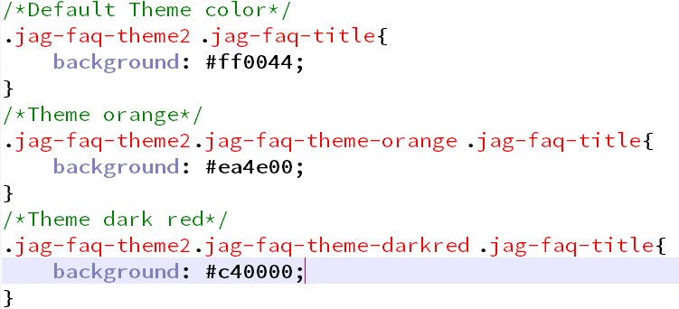
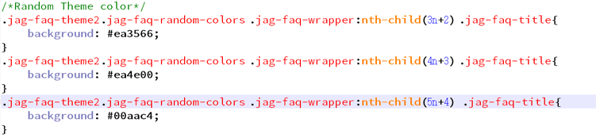
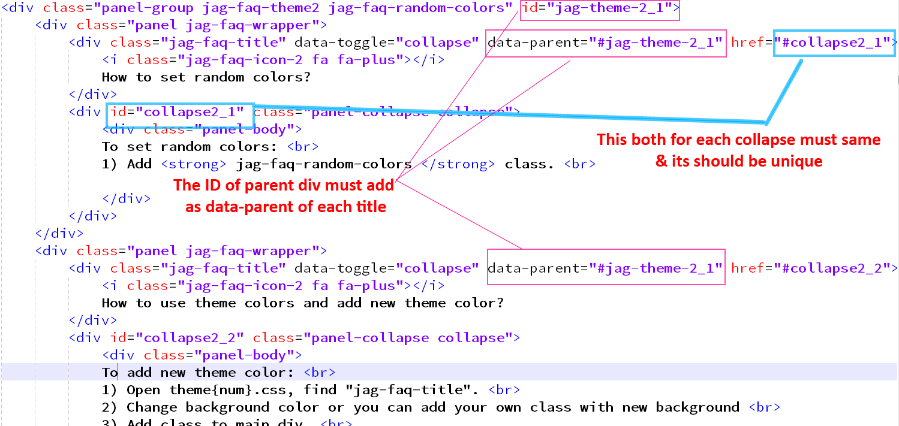
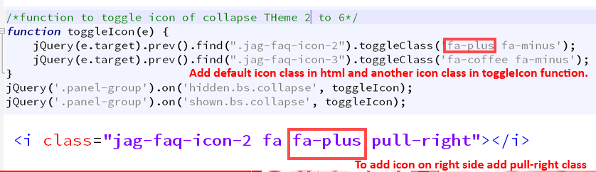

“JAG Bootstrap HTML 5 FAQ SHOWCASE” Documentation by “JAG THEMES” v1.0
“JAG Bootstrap HTML 5 FAQ SHOWCASE”
Created: 22/04/2017
By: JAG THEMES
Email: jag.kreative@gmail.com
Thank you for purchasing our template.
Table of Contents
- HTML Structure
- CSS Files
- JavaScript
- How to Integrate?
- How to Modify?
- Important Notes
- Sources and Credits
A) HTML Structure - top
This template is based on bootstrap version 3.3.7 , So it uses the same structure same as bootstrap. Nothing new.
For Accordian we have use bootstrap collapse component
B) CSS Files and Structure - top
CSS is for various themes: theme{num}.css
C) JavaScript - top
This theme has following Javascript files.
- jQuery
- jquery.matchHeight-min.js : Match height JQuery
- flip.js : Flip jQuery
- jag-faq-custom.js : Custom js file
jquery.matchHeight-min.js is used for equalheight of boxes. It is only applied for theme 7,8,9
flip.js is used for flip horizontal & Vertical. It is only applied for theme 9
jag-faq-custom.js is custom js file.
D) How to Integrate ? - top
The downloaded zip contains the index.html file. If you want to integrate a specific theme in your bootstrap template. You can do following steps.
- Include following css :
- fontawesome.min.css
- theme(theme-number).css
- Include JQuery if you do not have included that in your template.
- Include jquery.matchHeight-min.js in footer if your are using Theme from 7,8,9 (recommended)
- Include flip.js in footer if your are using Theme from 9 (recommended)
- Now for example if you want to integrate theme 1. Then from index.html file select code staring from "Theme 1 Start" and ending to "Theme 1 End" OR You can use template from demos folder.
- That's it. Now just add content. Your FAQ section is ready.
E) How to Modify? - top
FAQ SHOWCASE is build with basic bootstrap grid & collapse structure. You can add some predefined classes to use the features/effects of various themes.
How to change theme's base color?
JAG FAQ SHOWCASE gives you 4 predefined colors. To use those colors you just have to add the class to parent div. For example to use the orange theme. You can use jag-faq-theme-orange class.
<div class="panel-group jag-faq-theme2 jag-faq-theme-orange" id="jag-theme-2">
Template has following predefined classes for colors.
- jag-faq-theme-orange
- jag-faq-theme-darkred
- jag-faq-theme-pink
- jag-faq-theme-blue
You can also add your own custom colors. Just open the theme-(theme-number).css. Go to the last section of CSS where you can find CSS for theme color. You can simply copy paste it and change the color code and class name according to your needs.
How to change grid ?
As we are using bootstrap you can simply use bootstrap's grid to modify the FAQ SHOWCASE grid.
How to use random color?
Use jag-faq-random-colors class in parent div. This class allows you to make random colors grid or accordian
You can add those class as shown below in parent div tag.
<div class="panel-group jag-faq-theme2 jag-faq-random-colors" id="jag-theme-2">
To Change Random Colors. Open theme{num}.css and change color
If you are using Theme from 2 to 6 (Accordian) : Then make sure you have consider following things:
If you are using Theme from 9 (FLIP) : Then make sure you have consider following things:
- For Horizontal Flip use : jag-flip-horizontal class
- For Vertical Flip use : jag-flip-vertical class
If you are using theme from 7,8,9. And want to show faq answer in modal box you have to create separate modal box for each answer

Change the icon in Accordian (Theme 2 to 6)
Add Class jag-faq-icon-{num} in i tag and add default icon class in html. And in toggleIcon function add your toggle icon class.
G) Sources and Credits - top
- Bootstrap
- Fontawesome
- Flip jQuery
- Match height jQuery
Once again, thank you so much for purchasing this template. If you have a more general question relating to the template you might consider visiting the forums and asking your question in the "Item Discussion" section.
JAG THEMES